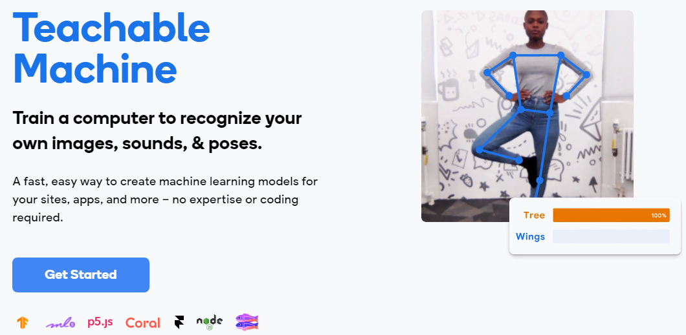
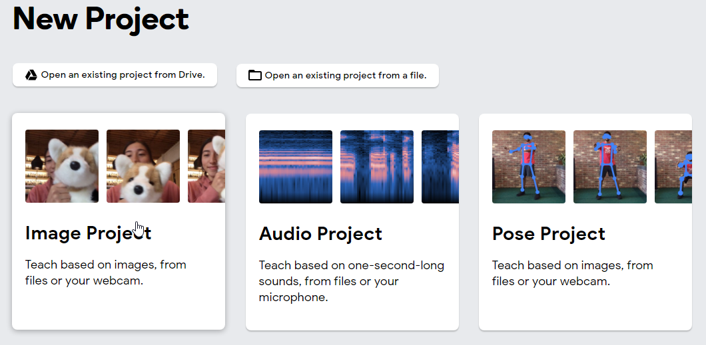
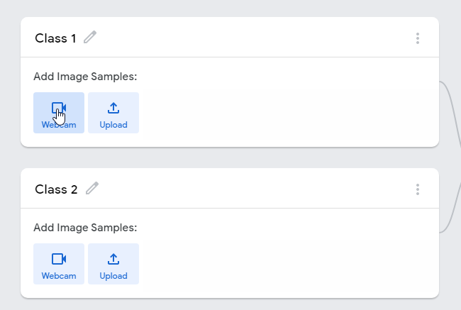
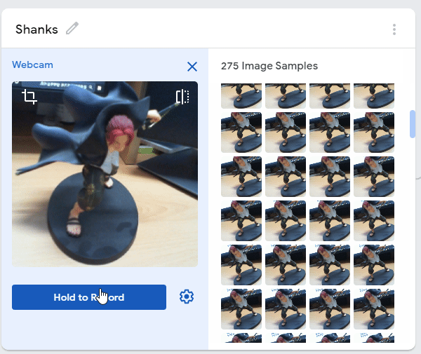
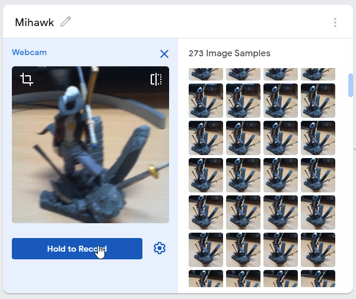
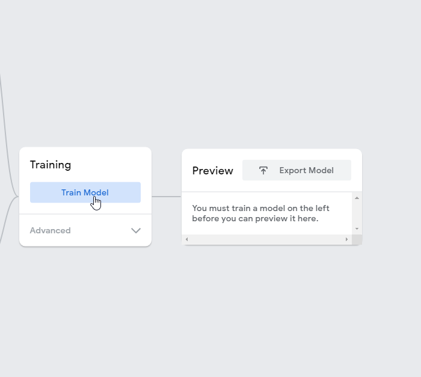
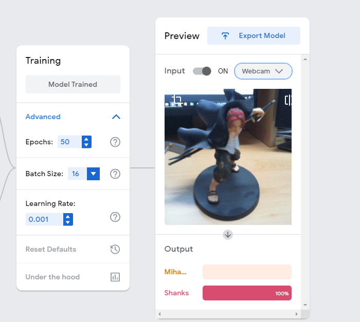
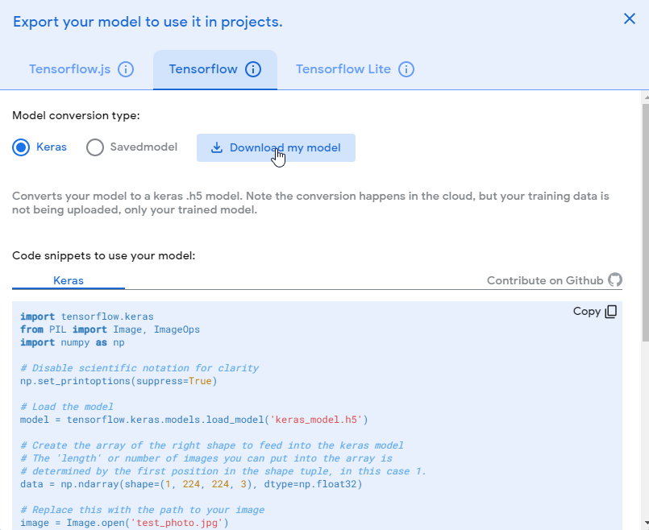

Introduction : Teachble Machine¶

This is made by Google CreativeLab Team. Teachable Machine is a web-based tool that makes creating machine learning models fast, easy, and accessible to everyone. It trains a model to recognize your own
images
sounds
poses.

We can train models by just clicking the mouse button. Therefore, expertise and coding skill are not required. For instance, I’ll show you two characters(figures) from “ONE PIECE”
Mihawk
Shanks
The figrues’ information is given below. Let’s try to classify images.
1. How to train¶
It’s so easy. Juet follow them. Whatever you picked any projects, it is not a problem. But, to follow this project, I recommend “to choose Image Projects”. You can see the above picture.
Push “Webcam” Button. (You may modify the class name.)

Just Keep pushing “Hold a Record Button”. Then, You can collect your datasets fast.


If you’ve fininshed to set Image Datasets, then push the “Train Model” Button.

That’s all.
2. Inference and Results¶
You can view your trained results. Moreover you can download your datasets and model.

The picture given below is when you clicked the button “Export model”. From “Tensorflow.js” banner, you can refer to url containing model and datasets. Only in “Tensorflow” banner, you can test simply python codes. You need a tensorflow modules. “Tensorflow Lite” supports to mobile or other edge devices.

I also made {DL_course/Image_Classficiation/Cam_Classify.py} for you. So you can also simulate this file. If you want to experiment your own datasets, then overwrite labels.txt and keras_model.h5 from converted_keras.zip file.
To proceed this course, simply check this :
You need to set directories on {your_directory}/AI_beginner_course/DL_course/Image_Classification
So, don’t forget below line :
# you can skip, if your current direcory is on "Image_Classification".
$ cd AI_beginner_course/DL_course/Image_Classification/
If you’ve finished, try this code :
$ python3 Cam_Classify.py
If you have TLS_block error, then please see this line. You can escape by pushing q key!!. The FPS of this program will be much low, beacuse Teachable Machine supports GPU remotely. Despite of this, it may operate well.
Anyway, you can see more details, such as model parameters, model loss, accuracy and so on in “Teachable Machine” site…
Introduction : MNIST¶

MNIST(Modified National Institute of Standards and Technology database) is the database of handwritten digits, (visit for this page), which obtains 60,000 training examples and 10,000 test examples. It is basically used for Deep Learning. We aim to classify the numbers from 0 to 9. Furthermore, we test for our handmade digits, with our made Deep Learning models.
1. Training Phase¶
See this link(colab)
We trained 60,000 numbers of images(Open Dataset, MNIST).
You may remember the only mnist_99acc_model.h5 file. (You can Download here)
It helps to load model paramters easily.
(In this course, you can train in colab with GPU for free. It is too hard to train mnist datasets with Jetson Nano toolkits, because of low memories. I strongly recommend to train with devices having GPUs.)
2. Data Preparation¶
See this link(colab)
This helps your handmade datasets to become suitable inputs of this model.
I wrote this codes about Data Preprocessing.
How to run? (Your directories must be on
Image_Classification/)Prepare only a written number (0 ~ 9)
There are some rules. Keep in mind!
1. The written number should be enough large (Recommend to take over the 60% area) 2. The written number should be the only one number (e.g. never recognize 32, 64, 58... Only allow "0", "3". etc.) 3. The more Pen thickness, the better. 4. The background (paper) should be white. Don't shade the light by cameras.
For example, there is a good case


Then, these result will be

Now, let’s Run “Data_Preparation.py”
Note that we don’t care what the file names are. You only need any “.jpg” files
At,
{your_directory}AI_beginner_course/DL_course/Image_Classification},$ tree . . ├── Data_Preparation.py ├── Test_0.jpg ├── Test_1.jpg ├── Test_2.jpg └── Test_3.jpg 0 directories, 5 files
Then
*.jpgfiles will convert toPreprocessed_i.jpgfiles by running this py :$ python3 Data_Preparation.py
Results:
$ tree . . ├── Data_Preparation.py ├── PreProcessed │ ├── Preprocessed_0.jpg │ ├── Preprocessed_1.jpg │ ├── Preprocessed_2.jpg │ └── Preprocessed_3.jpg ├── Test_0.jpg ├── Test_1.jpg ├── Test_2.jpg └── Test_3.jpg 1 directory, 9 files
3. Inference¶
See this link(colab) (Same as 2)
You can test on your written numbers at AI_beginner_course/Image_Classification/Inference.py.
Your written and resized PreProcessed/Preprocessed_i.jpg files will be evaluated from saved Image_Classification/mnist_99acc_model.h5 Anyway,
$ python3 Inference.py
(omit)
In PreProcessed folder, there are files :
['PreProcessed/Preprocessed_0.jpg', 'PreProcessed/Preprocessed_1.jpg', 'PreProcessed/Preprocessed_2.jpg', 'PreProcessed/Preprocessed_3.jpg']
(omit)
From PreProcessed/Preprocessed_0.jpg, We predicted : [3] .
From PreProcessed/Preprocessed_1.jpg, We predicted : [7] .
From PreProcessed/Preprocessed_2.jpg, We predicted : [8] .
From PreProcessed/Preprocessed_3.jpg, We predicted : [4] .
FAQ¶
ImportError: /usr/lib/aarch64-linux-gnu/libgomp.so.1: cannot allocate memory in static TLS block
Then, what should I do?
A. Add at shell
$ export LD_PRELOAD=/usr/lib/aarch64-linux-gnu/libgomp.so.1
From now on, you’ve checked a simple model training and inference with MNIST!